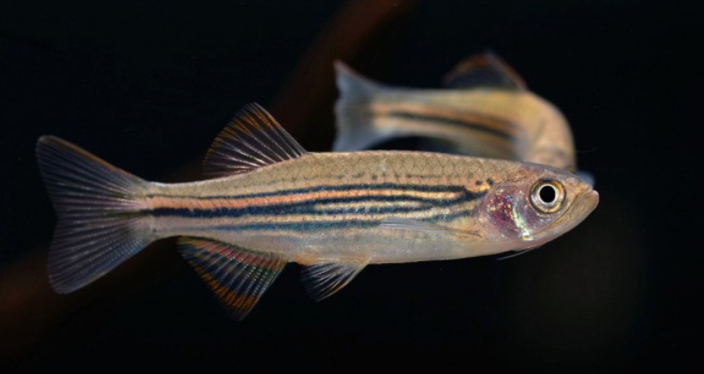
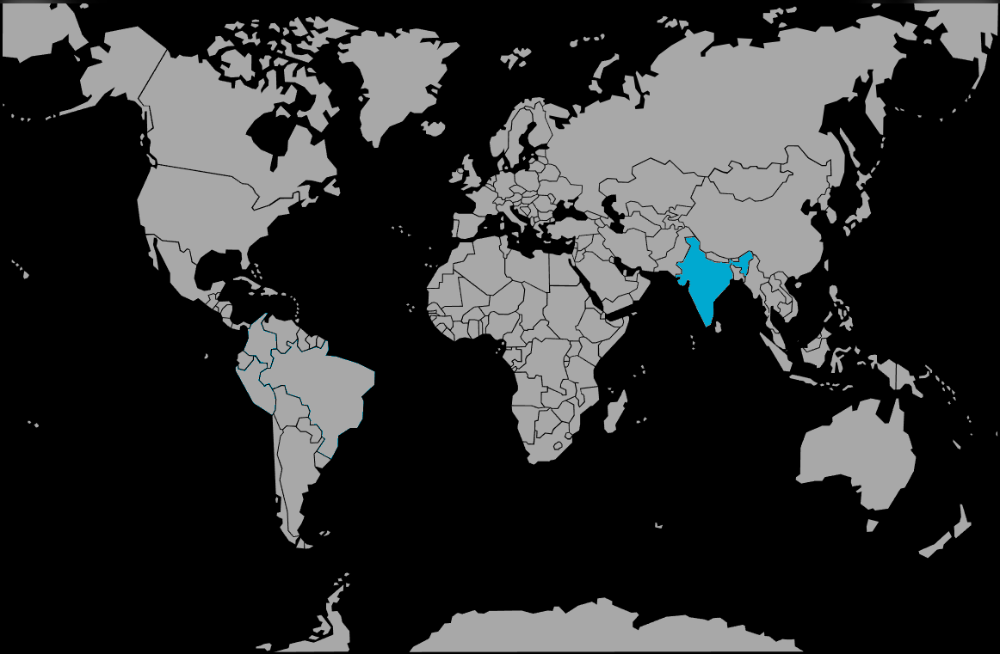

Systématique
- Ordre : Cypriniformes
- Famille : Danionidae
- Genre : Danio
- Espèce : D. meghalayensis

Danio meghalayensis est un cyprinidé originaire du nord-est de l'Inde. Décrit en 1985, il appartient au groupe des "grands Danios" et a longtemps été (et est encore souvent) confondu avec Danio dangila en raison de leur grande ressemblance morphologique.
Il atteint une taille adulte comprise entre 8 et 10 cm. Son corps est élevé et comprimé latéralement. Sa coloration est caractérisée par un motif réticulé complexe : des barres verticales bleutées et dorées s'entremêlent sur les flancs, créant un effet de "chaîne". Il possède deux paires de barbillons très développés, un trait typique de ce groupe.
Il se distingue de D. dangila principalement par des critères morphométriques précis (longueur des barbillons, hauteur du corps) et sa localisation géographique stricte.
C'est un poisson grégaire, actif et puissant. Il doit être maintenu en groupe d'au moins 6 à 8 individus pour canaliser son énergie.
En raison de sa taille et de sa vivacité, il nécessite beaucoup d'espace de nage. C'est un poisson de torrent qui apprécie le courant. Il est généralement pacifique, mais son activité incessante peut intimider des espèces trop calmes. C'est un excellent sauteur, l'aquarium doit être hermétiquement couvert.
Mode : ovipare.
C'est un diffuseur d'œufs en eau libre. La reproduction est rarement observée en aquarium communautaire car les œufs sont rapidement dévorés. En bac spécifique, la ponte a lieu au-dessus d'un substrat grossier (galets, billes) qui protège les œufs de la voracité des parents.
Dimorphisme sexuel : Les femelles adultes sont nettement plus rondes au niveau de l'abdomen et souvent un peu plus grandes que les mâles. Les mâles peuvent présenter des couleurs légèrement plus contrastées lors des parades.
Espérance de vie : Environ 3 à 5 ans.
Il est endémique de l'État du Meghalaya en Inde (littéralement "la demeure des nuages"). Il fréquente les ruisseaux de montagne et les rivières d'altitude (autour de 1200m), où l'eau est fraîche, cristalline et riche en oxygène, souvent sous un couvert forestier dense.
Répartition

Origine naturelle :
- Asie du Sud.
- Inde : État du Meghalaya.
- Localité type près de Shillong.
Paramètres de maintenance
Température : 18 à 23 °C (espèce subtropicale craignant les fortes chaleurs).
pH : 6,5 à 7,5.
GH : 5 à 15 °dGH.
Courant : Fort. Une filtration surdimensionnée créant un bon brassage est recommandée pour simuler son milieu torrentiel.
Volume conseillé : Minimum 120 à 150 L. Une façade de 100 cm de long est un minimum pour permettre la nage de ce poisson actif de 10 cm.
Régime alimentaire
Régime : omnivore à tendance insectivore.
Dans la nature, il se nourrit d'insectes terrestres tombés à l'eau et d'invertébrés aquatiques.
En aquarium, il est vorace et accepte tout. Pour sa santé, privilégiez les granulés de qualité et une part importante de nourriture vivante ou congelée (vers de vase, daphnies, artémias).